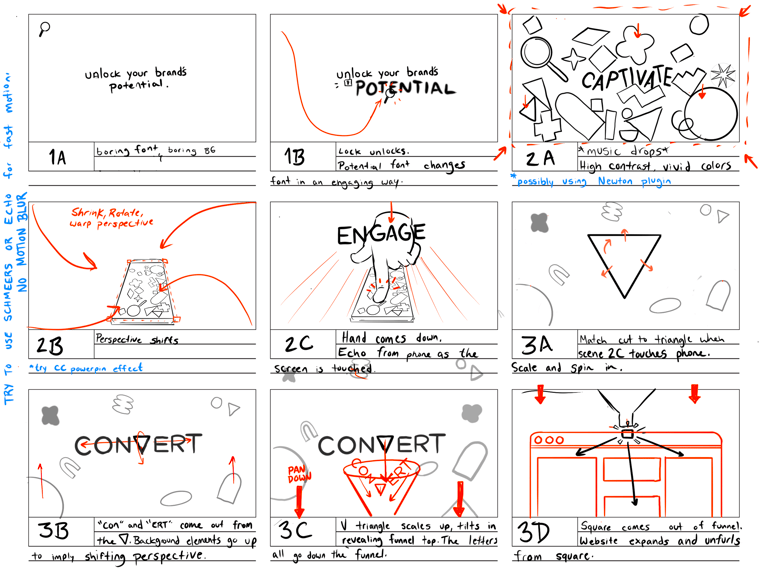
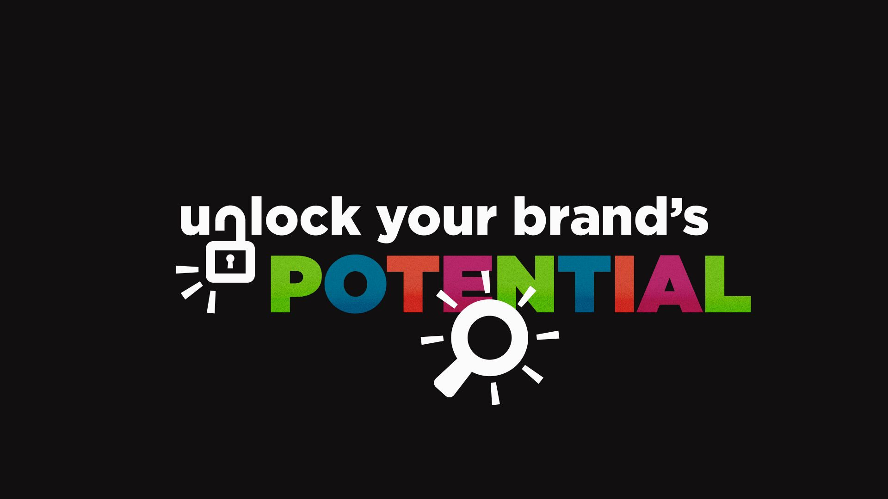

Этапы создания проекта
Моушн-проект начинается раньше, чем появляются первые ключевые кадры. Сначала нужно понять задачу, найти идею, проверить последовательность и ритм, затем подготовить дизайн и собрать движение. Пайплайн помогает принимать эти решения в подходящий момент.
На каждом этапе появляется результат, который можно показать, обсудить и проверить: бриф, концепция, раскадровка, аниматик, стайлфреймы, черновая анимация и финальный ролик. В этой лекции разберём, что они делают и как связаны между собой.
Пайплайн: решения, а не очередь программ
Пайплайн представляет собой организацию работы от задачи до готового результата. Он определяет не только порядок действий, но и то, какая информация нужна следующему этапу. В одиночном учебном проекте вы выполняете разные роли сами; в студии эти задачи могут быть распределены между командой.
В короткой 2D-анимации часть этапов можно объединить. Для 3D-сцены понадобятся моделирование, материалы, свет и, при необходимости, риг. В обоих случаях важно заранее определить смысл, визуальное решение и способ проверки. Программы подбираются под проект, а не наоборот.
Один проект на протяжении лекции
Представим учебную задачу: сделать короткий анонс университетской выставки для вертикального экрана. Зритель должен узнать, что состоится выставка, увидеть дату и понять, где её посетить. Название и данные в примере условные.
Идея нашего ролика: работы студентов собираются в общую экспозицию. Отдельные карточки превращаются в сетку, затем освобождают место для названия и даты. Мы будем возвращаться к этому примеру, чтобы отличать задачу, визуальную идею и технический приём.
Препродакшн: определить задачу и проверить идею
Препродакшн уменьшает неопределённость. До начала подробной анимации нужно понять сообщение, условия показа, визуальное направление и структуру ролика. Это позволяет обсуждать идею через понятные материалы, а не через обещание «потом будет красиво».
От брифа к рабочему решению
Бриф фиксирует исходную задачу и ожидания. Ответы лучше обсуждать вместе с заказчиком или преподавателем. Неясные формулировки следует уточнить до производства: что означает «динамично», какая информация обязательна, где появится ролик и кто утверждает результат?
Ниже сохранён бриф из исходной лекции. Его можно использовать и для коммерческого заказа, и как опору для собственного проекта.
Бриф
Любой проект - это зона взаимной ответственности как членов команды, так и во взаимодействии клиента с вами. Для хорошей и понятной коммуникации нам нужно понимать что хочет клиент. Для этого существует бриф.
Бриф (в контексте создания видео-графики) – документ, в котором содержатся ключевые требования, цели и задачи, связанные с созданием видеоролика. Он служит основой для работы команды, участвующей в производстве видео, и помогает всем участникам процесса лучше понять ожидания и конечные цели проекта. Если в проекте есть заказчик бриф составляется совместно с ним. Обычно бриф включает в себя цель, анализ целевой аудитории, основное сообщение, стиль и референсы, длительность, сроки выполнения, бюджет, FPS и другую техничечкую информацию. Бриф помогает структурировать весь процесс создания видео и избежать недопониманий между заказчиком и исполнителем.
Что может включать в себя бриф:
Цель проекта. Опишите основную цель видео: продвижение продукта, создание бренда, информирование аудитории, привлечение клиентов и т.д.
Краткое описание. О чём будет ролик и что зритель должен понять после его просмотра.
Целевая аудитория. Для какой аудитории это видео?
Какие основные идеи или сообщения нужно донести до зрителя? Например: «Наша продукция повышает производительность на 50%», «Сервис — самый удобный и быстрый».
Продолжительность ролика
Какой стиль вы ожидаете? Минималистичный, современный, динамичный, веселый, серьезный? Например, графика в стиле 2D/3D, плоский дизайн, изометрический стиль, кинетическая типографика и т.д.
Какой должен быть тон видео? Дружелюбный, формальный, инновационный и т.д.?
Референсы и примеры. Приложите ссылки на примеры видео, которые вам нравятся по стилю, тону или анимации.
Текст, слоган или основные моменты, которые необходимо озвучить в видео (если это требуется). Например: ключевые фразы, структура повествования, важные моменты.
Графические элементы и брендбук. Есть ли у вас существующие материалы? Логотипы, шрифты, брендовые цвета, элементы дизайна и т.д. Приложите все графические материалы, которые нужно использовать в видео.
Звуковое сопровождение Нужен ли саундтрек или звуковые эффекты? Есть ли у вас предпочтения по музыке? Например: динамичная музыка, атмосферная, легкая фоновая мелодия.
Технические требования. В каком разрешении должно быть видео? (например, 1080p, 4K). В каком формате нужно финальное видео? (например, MP4, MOV). Платформа для публикации: YouTube, социальные сети, реклама и т.д.
Сроки и бюджет. Когда нужно предоставить готовое видео? Сроки для согласования этапов производства ролика. Ограничения по бюджету.
Иногда ответы на эти вопросы помогают и в творческих проектах когда вам сложно сформулировать идею.
Для учебного анонса ответы превращаются в конкретные решения: вертикальный кадр, читаемая дата, понятная последовательность и финальная карточка с местом проведения. Если важные данные ещё не согласованы, отметьте их как открытые вопросы.
Исследование, референсы и концепция
Исследование помогает понять содержание и контекст. Референсы показывают, как могут работать композиция, цвет, типографика, переход или характер движения. В подборке должно быть понятно, какой именно приём вы изучаете. Один красивый ролик не заменяет описание собственной идеи.
Мудборд собирает визуальное направление: изображения, палитру, материалы, шрифтовой характер. Мошн-референсы показывают поведение во времени. Их удобно хранить отдельно или снабжать пояснениями, чтобы не путать статичный стиль и движение.
Концепция связывает форму с задачей. Для нашего примера фраза «карточки собираются в выставку» объясняет и визуальную метафору, и будущий переход. Формулировка «сделаем крутой переход» описывает только эффект и ещё не отвечает на вопрос о смысле.
Сценарий: что происходит и что узнаёт зритель
Сценарий может включать речь, экранный текст и действие. Для короткого графического ролика достаточно нескольких смысловых событий. Сначала определите их порядок, затем ориентировочное время. Если есть озвучивание, проверьте текст вслух и подготовьте черновую запись.
| Участок учебного анонса | Действие | Информация |
|---|---|---|
| Начало | Появляются отдельные работы студентов. | Знакомство с содержанием выставки. |
| Развитие | Карточки собираются в общую сетку. | Работы объединяются в событие. |
| Акцент | Сетка перестраивается, появляется название. | Название выставки становится главным. |
| Завершение | Устойчивая карточка с датой и местом. | Когда и куда прийти. |
Раскадровка, стайлфрейм и аниматик
Эти материалы отвечают на разные вопросы. Раскадровка показывает последовательность кадров и действия. Стайлфрейм демонстрирует предполагаемый внешний вид одного или нескольких ключевых кадров. Аниматик проверяет последовательность во времени. Один документ не заменяет остальные.
Раскадровка не обязана быть художественно законченной. Для анонса достаточно показать карточки, их сборку, место названия и финальный экран. Стрелками и короткими пояснениями обозначьте движение и связи между кадрами.
В аниматике расположите эти кадры на временной шкале, добавьте черновой звук и простые перемещения, если без них непонятно действие. Проверьте, успевает ли зритель считать сообщение, где возникает акцент и насколько логичны переходы. Удалять и переставлять черновые кадры проще, чем переделывать готовую сложную сцену.
Какие решения о времени и переходах уже можно проверить в этом аниматике? Что ещё остаётся определить на этапе дизайна и подробной анимации?
Реальный пример: FSM Showcase
В кейсе Found Search Marketing за 2025 год опубликованы раскадровка, аниматик и стайлфреймы. Сравните первый экран раскадровки с дизайнерским кадром ниже: идея открытия потенциала бренда сохраняется, а типографика, цвет и композиция уточняются. Это пример одного проекта, а не обязательный шаблон для любого ролика.


Как меняется роль надписи POTENTIAL между эскизом, аниматиком и стайлфреймом? Какие решения относятся к сценарию, какие к дизайну, а какие к движению? Полный кейс автора.
Что согласовать до производства
Обсудите сообщение и структуру, визуальное направление, основные переходы и время показа обязательной информации. Определите также ответственного за решения, порядок обратной связи и набор файлов для передачи. В учебном проекте эти договорённости можно зафиксировать коротко, но явно.
Порядок раскадровки, стайлфреймов и аниматика может меняться: дизайн и проверка времени часто развиваются параллельно. Важнее понять, какие решения уже проверены, а какие пока предположения. Сложный эффект или технически рискованный переход лучше испытать на маленьком тесте заранее.
Продакшн: подготовить графику и собрать движение
На этом этапе идея становится конкретной анимацией. Подготовьте слои, контуры, изображения, модели и прочие элементы так, чтобы ими было удобно управлять. Если карточка должна раскрываться по частям, эти части нужно предусмотреть в исходном дизайне.
Для нашего анонса сначала подготовим сетку карточек и текстовые блоки. Затем создадим простую сборку ключевых действий, проверим порядок появления и лишь после этого будем уточнять плавность, вторичные движения и детали.
Черновая анимация и motion-тест
Черновая анимация, или blocking, помогает проверить ключевые положения, траектории и длительность сцен. Это уже движение рабочих элементов, но ещё не окончательная полировка. Не стоит тратить время на мелкую пружинку каждой карточки, пока не работает общий переход.
Motion-тест проверяет отдельное решение: например, как сетка собирается из карточек или как текст появляется в финальном экране. Он не заменяет аниматик всего ролика, но помогает оценить сложность и выбрать подходящий приём.
Дизайн для движения
Красивый неподвижный кадр не всегда удобно анимировать. Проверьте, где находятся опорные точки, какие элементы должны двигаться независимо, что происходит за границами кадра и хватит ли разрешения при приближении. Для 3D отдельно проверяют геометрию, риг, материалы и камеру.
Не все сцены требуют одинакового количества деталей. В информационном анонсе движение должно поддерживать порядок чтения. После каждого изменения смотрите сцену целиком: улучшение одного элемента не должно разрушать ритм всего ролика.
Пример процесса студии
Найдите моменты, где видно исследование формы или движения. Что команда тестирует до завершённого результата? Какие пробы вы могли бы сделать для собственного проекта?
Постпродакшн: собрать целое
Композитинг объединяет элементы сцены, монтаж организует последовательность, а цвет и звук помогают получить цельное восприятие. В моушн-проекте эти задачи могут выполняться в одной программе и частично пересекаться с анимацией. Важно не название этапа, а качество сборки.
Звук стоит учитывать с начала проекта. Черновая речь или музыкальный ритм влияют на аниматик, а финальные акценты уточняются вместе с движением. Если звуковой эффект подчёркивает появление карточки, сравните точность совпадения и характер звука с её движением.
В нашем анонсе проверим монтаж, читаемость финальной карточки и единство цвета между сценами. Размытие движения, шум, свечение и виньетка применяются по задаче. Они не являются обязательными «финальными штрихами» и не исправляют слабую композицию.
Обратная связь: править на подходящем уровне
Согласование нужно на протяжении проекта, а не только в самом конце. Показывайте материал с пояснением, что именно готово и что вы предлагаете обсуждать. В аниматике важно проверить смысл и время; отсутствие финальных текстур в нём само по себе не является ошибкой.
Полезная обратная связь называет место и проблему. Например: «На 00:08 дата исчезает до того, как я успеваю её прочитать». Это можно проверить и исправить. Формулировку «сделайте динамичнее» нужно уточнить: быстрее переходы, больше контраста, другой ритм или иная идея?
Собирайте комментарии в одном месте, отмечайте приоритет и сохраняйте версии с понятными именами, например exhibition_v03_review.mp4. Количество раундов, сроки и состав изменений договариваются для конкретного проекта. Универсального правила о бесплатных правках нет.
Финальная передача и архив
Экспорт создаёт файл, но сам по себе не завершает проект. Откройте экспортированную версию и проверьте начало и конец, изображение, звук, текст и длительность. Проверьте также площадку показа: вертикальный экран, сайт и большой экран могут предъявлять разные требования.
Контейнер и кодек являются разными параметрами: расширение MP4 или MOV не описывает всё содержимое файла. Прозрачность, качество, размер и совместимость определяются выбранными настройками. Если нужен прозрачный фон, согласуйте подходящий формат и кодек отдельно.
| Что передают | Зачем |
|---|---|
| Версию для показа | Готовый файл с настройками конкретной площадки. |
| Мастер высокого качества, если нужен | Основа для дальнейших версий и перекодирования. |
| Проект и исходники, если согласовано | Возможность продолжить редактирование. Для After Effects используют Collect Files и проверяют собранную копию. |
| Субтитры, звук и дополнительные версии | Материалы для предусмотренных способов показа. |
| Краткое описание комплекта | Имена файлов, назначение версий, необходимые шрифты и плагины. |
Порядок передачи исходников, использование шрифтов и срок хранения согласуйте заранее. Collect Files собирает выбранные исходные материалы, но не заменяет установку нужных плагинов и шрифтов. Архив должен содержать проверенные финалы и понятную структуру проекта, а не только файл с названием final_final.